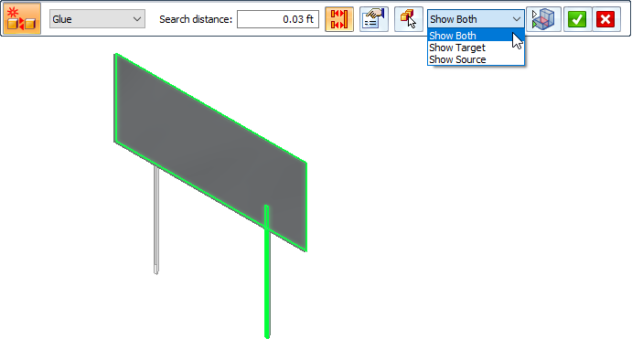
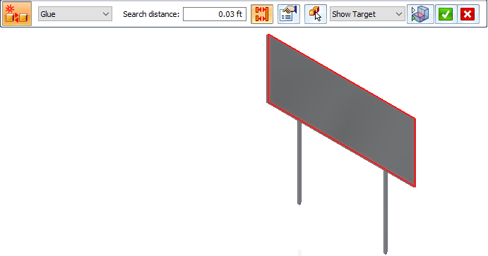
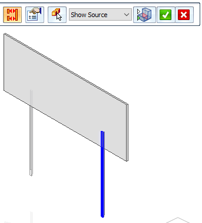
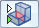
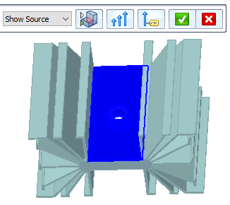
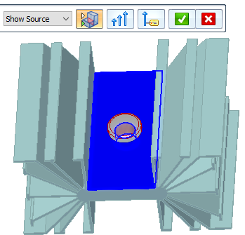
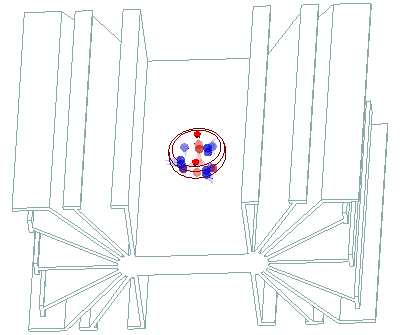
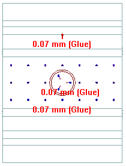

Assembly Connector command bar
The Assembly Connector command bar is displayed when you create and edit glue, no penetration contact, thermal, or edge connectors manually. The available options depend upon connector type.
- Connector Type
-
Specifies the connection type between assembly faces or surfaces when creating connectors using the Manual command. Also specifies the connection type when using the Edge connector command.
- Glue
-
For Manual connectors—Creates a connection like a stiff spring.
For Edge connectors—Creates a rigid connection between nodes on edge-to-face connections.
All glued connections use a search distance and an optional penalty factor.
- No Penetration
-
For Manual connectors—Prevents faces that touch from penetrating.
- Rigid
-
For Edge connectors—Provides rigid links between nodes on edge-to-edge connections.
- Thermal
-
A thermal connector defines thermal resistance (conductance) between surfaces or faces in a heat transfer study or a thermal coupled study, for example, in thermal insulation applications.
Select the Properties button to define the Thermal conductance value in the Connector Properties dialog box.
Note:The Thermal conductance value is based on the contact resistance between the faces (such as steel to copper) and the surface finish (for example, shiny or dull).
- Thermal Glue
-
A thermal glue connector defines a glue connector in a heat transfer study or a thermal coupled study.
 Select Multiple
Select Multiple -
Use the Select Multiple button to connect multiple faces or surfaces with a single connector.
-
When set, creates a connection between multiple faces and surfaces.
-
When cleared, creates a connection between just two faces or surfaces.
-
 Swap Targets and Sources
Swap Targets and Sources-
For thermal, no penetration, and glue connectors, swaps the face geometry assigned to the target set and source set. Thus, faces in the second selection set (sources) become the faces in the first selection set (targets).
Alternatively, you can press the F key.
Example:You may want to use this option:
-
If you meshed the model before creating connectors, you can see where the mesh is coarse and fine. It is best to pick the face with the finest mesh as the source side, regardless of whether it is a surface or solid face. More elements on the source face means that more contact elements are created. This produces a more accurate solution.
-
When mesh sizing has changed which side of a face pair has denser (finer) mesh.
This option is not available for edge connectors.
-
 Toggle Source/Target Selection
Toggle Source/Target Selection-
Use this button to change which side of the connection you select first. For glue and no penetration connectors, this is the source side or the target side. For edge connectors, this is the from side and the to side.
- Options
-
Displays the Assembly Connector Properties dialog box for the selected connection type.
- Target Symbol Color
-
Displays the Color dialog box, so you can change the default assembly connector symbol color assigned to the target faces or surfaces.
Note:The default color is set on the Simulation page of the Solid Edge Options dialog box.
- Source Symbol Color
-
Displays the Color dialog box, so you can change the default assembly connector symbol color assigned to the source faces or surfaces.
Note:The default color is set on the Simulation page of the Solid Edge Options dialog box.
- Visibility Options
-
Use the Visibility Options list to review the connected faces in each contact pair. For the currently selected connector pair, it highlights and shows the target face (red highlight), the source face (blue highlight), or both faces (green highlight).
- Show Both
-

- Show Target
-

- Show Source
-


Toggle Hide/Transparent-
You can use the Toggle Hide/Transparent control with the Visibility Options list to identify the target and source objects in a connection, and to cycle through the display of all unconnected parts in transparent mode or in hidden mode. If a model contains multiple parts, all of the parts that are not involved in the connection are shown in transparent mode, and then hidden.
Example:When the Show Source visibility option is selected, and Toggle Hide/Transparent is off, the unconnected part is hidden.

When the Show Source visibility option is selected, and Toggle Hide/Transparent is on, the unconnected part is shown in transparent mode.

 Symbol Size
Symbol Size-
Displays the Graphic Symbol Size dialog box, so you can change the default assembly connector symbol size and spacing displayed in the graphics window.

 Show Label
Show Label-
Shows or hides the assembly connector value label in the graphics window.
This option is not available for edge connectors.
Example:
How do I
Create connectors based on assembly relationshipsCreate assembly connectors using the Auto command
Create manual connections between faces or surfaces
Replace target and source connection regions
Change connector region direction
Learn more
Assembly connectorsTarget and source connector regions
Assembly connector handles, labels, and symbols
Glue and no penetration contact connectors
Thermal connectors
Look up more details
Auto command barAssembly Connector Properties dialog box